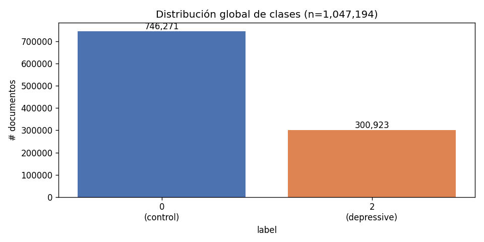
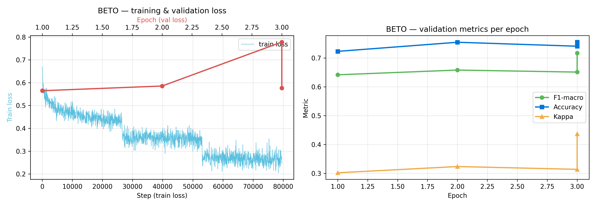
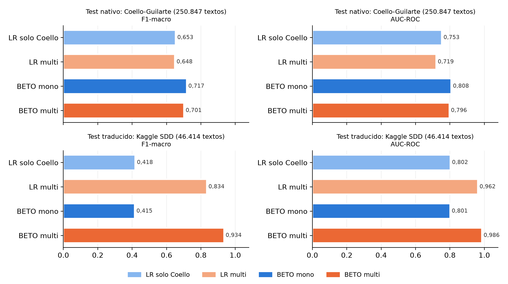
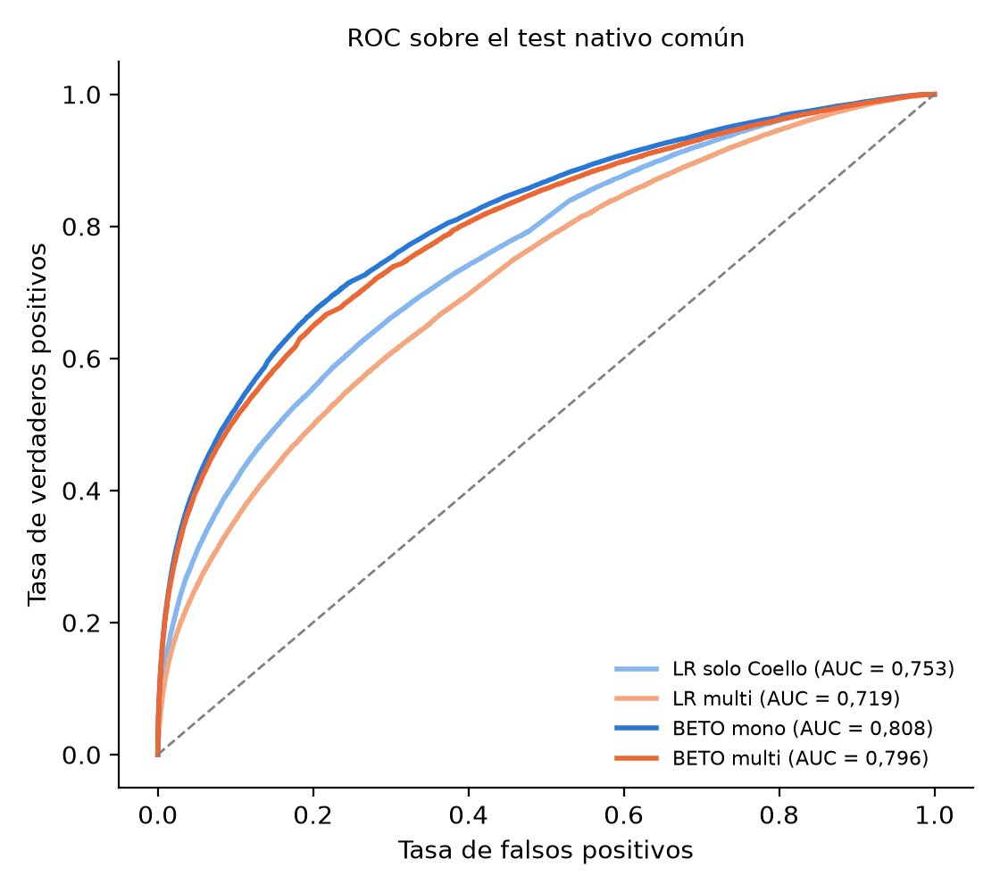
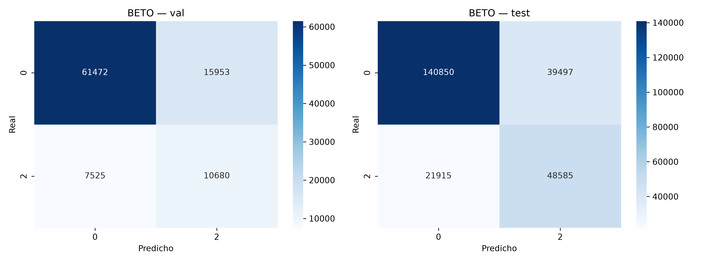
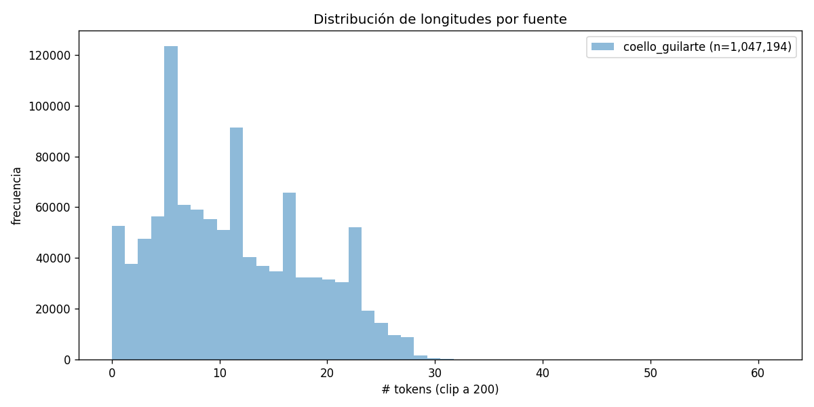
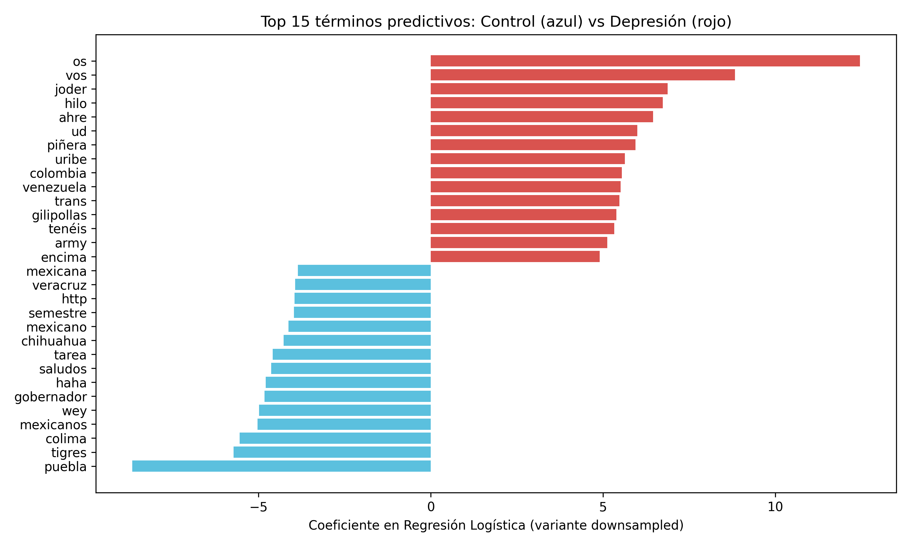

Evaluación empírica de modelos contextuales, ingeniería en hardware accesible y robustez sociolingüística.
Principal causa de discapacidad mundial.
En países de ingresos medios y bajos.
Gran mayoría concentrada en inglés.
«Un modelo de lenguaje contextual en español supera el rendimiento predictivo de los modelos lineales léxicos en la clasificación binaria de publicaciones individuales.»
«Un modelo contextual en español no presenta diferencias estadísticamente significativas respecto a las líneas base léxicas.»
Para evitar falsos positivos por autocorrelación interna de publicaciones por autor:
| Fuente | Documentos | % | Origen |
|---|---|---|---|
| Coello-Guilarte (Twitter) | 1.047.194 | 79,9% | Español nativo |
| Kaggle SDD (Reddit) | 232.067 | 17,7% | Inglés trad. |
| Reddit Mental Health | 24.031 | 1,8% | Inglés trad. |
| Depression Reddit | 7.731 | 0,6% | Inglés trad. |



| Modelo | F1-Macro | AUC-ROC | Kappa (κ) |
|---|---|---|---|
| LR TF-IDF (ponderada) | 0,655 [0,606; 0,693] | 0,755 [0,718; 0,790] | 0,321 |
| SVM Lineal TF-IDF | 0,653 [0,605; 0,692] | 0,754 [0,716; 0,787] | 0,318 |
| BETO Mono (Nativo) | 0,717 [0,665; 0,759] | 0,808 [0,755; 0,849] | 0,437 |



Al inspeccionar los coeficientes extremos de los modelos lineales, emergen fuertes marcadores regionales diatópicos no clínicos:

Un tweet individual contiene en promedio 10 tokens: una señal efímera y ruidosa. Sin embargo, al acumular el historial temporal del usuario:
| Nivel de Análisis | F1-Macro | AUC-ROC | Exhaustividad |
|---|---|---|---|
| Por Publicación Aislada | 0,717 | 0,808 | 68,9% |
| Por Usuario Agregado | 0,888 - 0,943 | 0,982 - 0,989 | 84,2% |
BETO superó categóricamente a las líneas base clásicas (ΔF1 = +0,062; ΔAUC = +0,052). H₀ rechazada formalmente en el 100% de las réplicas bootstrap. El modelado de atención y contexto sintáctico es indispensable en salud mental.
Traducir 264K posts de Reddit no benefició a la detección en tweets nativos. La discordancia de estilo discursivo y longitud impone una frontera que el simple volumen de datos sintéticos no puede resolver.
Con precisión FP16, secuencias acotadas a 128 tokens y diseño estadístico riguroso, una GPU local de 8 GB es suficiente para entrenar modelos de vanguardia sobre millones de textos.
Los clasificadores son vulnerables a variaciones geográficas. Someter los modelos a pruebas de estrés con marcadores enmascarados y circunscribir la solución a apoyo computacional no diagnóstico son requisitos no negociables.
Minimizar el número de publicaciones requeridas para emitir la alerta preventiva temprana.
Evaluar arquitecturas biomédicas hispanas (RoBERTa-BNE, MarIA, Bio-BETO) y modelos comprimidos.
Recolección homogénea por países (Argentina, México, Colombia, España, Chile).
Ensayos con profesionales de salud mental y comités de bioética para protocolos clínicos.